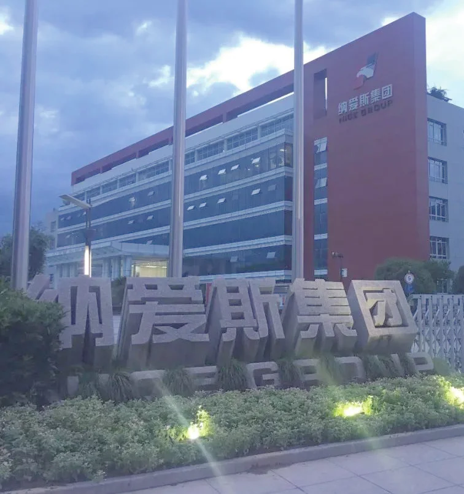

Chi è Amy Skin OEM?
Amy Skin è un marchio private label OEM / ODM per la cura della pelle realizzato nella nostra fabbrica a Guangzhou, Cina. Aiutiamo i marchi nuovi e in crescita a lanciare prodotti per la cura della pelle con formule pronte o sviluppo personalizzato, a partire da MOQ 500–1,000 unità per SKU.
La nostra promessa: 3A
Arrivi Affidabile. Grande pelle, prezzi onesti — e la produzione è possibile seguire passo dopo passo.
Rilassati. MOQ basso. La cura della pelle resa semplice. Servizi OEM / ODM davvero accessibili ai piccoli marchi.
In realta' e' conveniente. Prezzi competitivi e onesti — citati per ordine, non fissati su questo sito web, perché il prezzo giusto dipende dalla formula, pacchetto e quantità.
Da dove arriviamo
La nostra produzione torna oltre il nome di Amy Skin. La nostra fabbrica di Guangzhou, in Cina, gestisce una base di parco industriale, con 20 anni di esperienza di produzione. Amy Skin riunisce questa produzione sotto un marchio di marchio privato.
Marchi che produciamo per
La nostra fabbrica produce per marchi consolidati in patria e all'estero, tra cui un gruppo farmaceutico Fortune Global 500 e un gruppo di detergenti leader.

Baiyunshan
Guangzhou Baiyunshan Pharmaceutical Holdings, fondata 1997 — un marchio Fortune Global 500, focalizzata sulla salute per 400 anni. Classificato il 205esimo nella lista del 2020 China Brand Festival 500; elencato in Hong Kong e Shanghai.

Dr. Morita
Fondata nel 1934 a Changhua, Taiwan, con rami a Shanghai, Hong Kong e Tokyo, conosciuta attraverso Taiwan come un esperto di maschere facciali, una casa di cura della pelle di lunga data.

CnIce (NICE Group)
Un produttore cinese leader di detergenti per la lavanderia e prodotti per la cura personale, e un leader nazionale nel suo settore — onorato come un'impresa di credito AAA e un sito nazionale di dimostrazione eco-industriale.
Le nostre squadre
Squadra professionale + tecnologia professionale = servizio professionale. Tre squadre portano ogni ordine da idea a scaffale.

Pianificazione e progettazione
Il luogo di nascita dell'anima di un prodotto — la pianificazione messa a terra che dà un prodotto vitalità duratura.
Legale e regolamentare
Un sistema di archiviazione completo e una gestione legale professionale, salvaguardando il tuo marchio.

R&D
La pietra angolare del business — diligente e innovativo-driven, sempre raffinazione, portando i clienti ispirazione fresca.
Che cosa è confermato
| Voce | Confermato |
|---|---|
| Marchio e logo | Serif nero e oro — Cormorant Garamond wordmark, droplet-A mark, Eroe Nero #0A0908 / Champagne Oro #C9A86A / Crema #FAF6EF / Bianco #FFFFFF |
| Modello | Private label OEM / ODM per la cura della pelle — realizzata nella nostra fabbrica a Guangzhou, Cina |
| MOQ | 500–1,000 unità per SKU |
| Formule | 10,000+ formule pronte, più formulazione personalizzata — ogni marchio ottiene la propria formula |
| Certificazione | SGS ISO 22716 (verificata). |
| Contatto | WhatsApp +86 189 2882 3858; info@amyskinoem.com |
Richiedi un preventivo WhatsApp
Il prossimo: Certificazioni per mercato → · Il processo di 6 fasi →